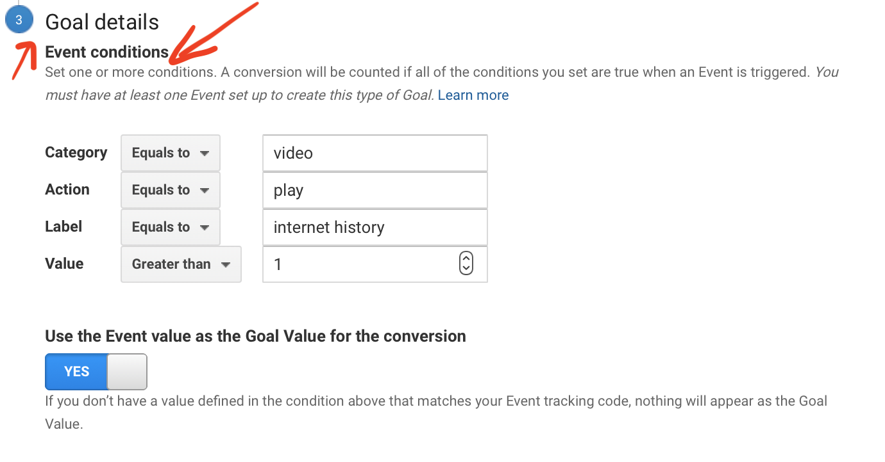

Welcome back to my blog!
The Internet and My Google Analytics Goals
We have been discussing how important User Accessibility is when we visit websites. It does help those with or without disabilities have a better web experience. The Internet should not be difficult to use and that’s how Web Developers can help. But, without the internet, this would not be possible! Do you know who or when the internet was created?
This week, I will create goals in my Google Analytics dashboard to report user activity on my User Science Journal. With each play of the video and like of the button, Google Analytics will let me know.
Hopefully with this fun History lesson, I will attract more than usual traffic to my site, while my Google Analytics goes to work for me. With this new data flow, I will be able to see first-hand how these reports are useful to developers like me!
"January 1, 1983, researchers began to assemble the “network of networks” that became the modern Internet".
A brief History on how the internet came to be and opened the doors for technology
My Goal

Event
I am using a template for Media Play as my Event condition. I have an interesting video for users about one of the greatest inventions in technology. My goal analytics is set up by a video "Play" button on my site, this sends an Event to my report. I will be able to see how manys views the video received. Fun!
